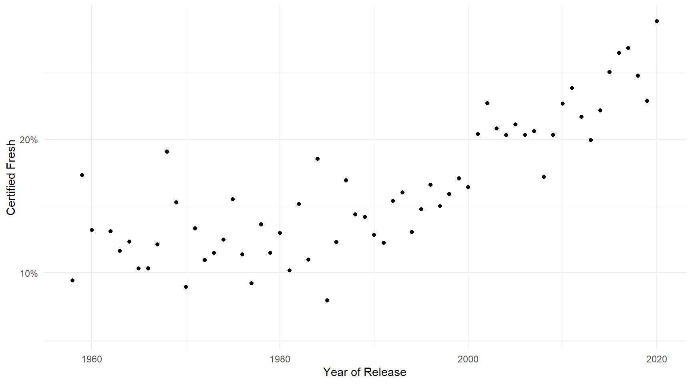
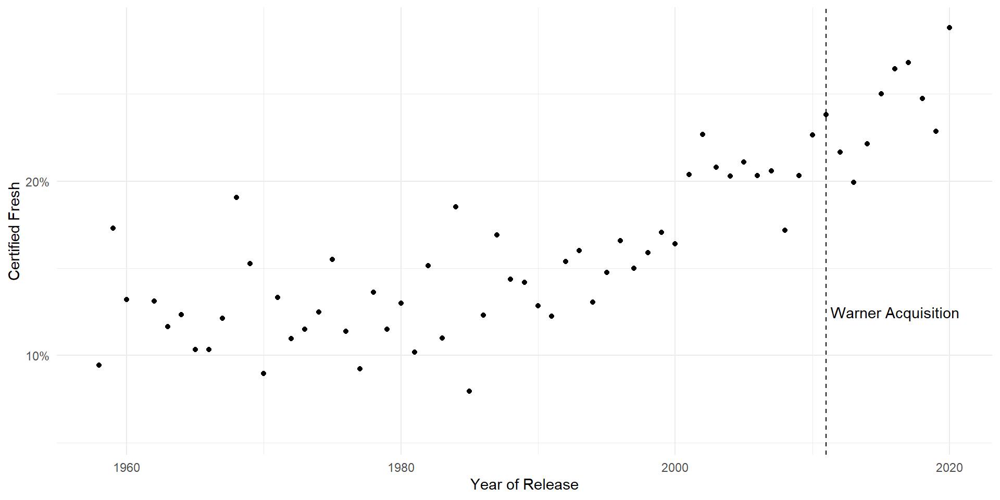
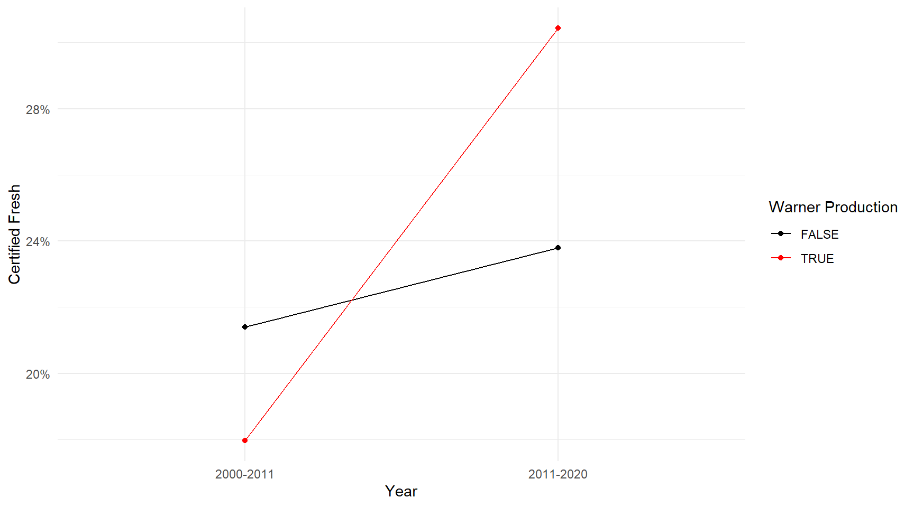

| Tomatometer | Total | % |
|---|---|---|
| Certified-Fresh | 3,259 | 18.4 |
| Fresh | 6,844 | 38.7 |
| Rotten | 7,565 | 42.8 |
Conditional Probability
POLS 3220: How to Predict the Future
Today’s Agenda
Learn how to estimate conditional probability
Introduce a common approach used by successful forecasters: balancing Inside View and Outside View.
Show how all this connects to a central problem in statistics: the bias-variance tradeoff.
Motivating Problem
Will the movie Roofman be “Certified Fresh” by Rotten Tomatoes?
How would you go about this prediction? What information would you research first?
Two Different Approaches
Inside View: Focus on the details of the case at hand.
- What characteristics of Roofman suggest that it will be Certified Fresh?
Outside View: Ignore the details of the case at hand. Focus on what happened previously with similar cases.
- How often does any film achieve a Certified Fresh rating?
Most people naturally gravitate towards the Inside View (Kahneman and Lovallo 1993), but the best forecasters combine both approaches!
Outside View

Outside View
This base rate is a useful starting point.
- Achieving a Certified Fresh rating is historically very rare. Serves as an “anchor” for our prediction.
What’s the problem with this approach? Why not stop there?
The pure Outside View yields a biased prediction, because it doesn’t incorporate any information about the case in question.
More details about the movie Roofman should help us refine our prediction.
Unconditional Probability
Conditional Probability
Conditional Probability
Conditional Probability
Conditional Probability
Conditional Probability
Conditional Probability
Conditional Probability
How far should we take this???
Inside View
The “Inside View” is very confident about Roofman. R-movies directed by Derek Cianfrance are always Certified Fresh.
What’s the problem with this approach?
Inside View
- Well, there are only 3 films in the entire database directed by Derek Cianfrance.
Practice
Is this strong evidence that Derek Cianfrance is an above-average director? \(P(\text{Certified Fresh}) > 0.25\)?
- If Cianfrance was just an average director, what is the probability that all three of his films would be Certified Fresh?
- If Cianfrance was just an average director, what is the probability that at least 2 out of his 3 films would be Certified Fresh?
Practice
Inside View
With only three data points, we cannot claim with confidence that Cianfrance’s next movie has a \(\frac{2}{3}\) probability of achieving Certified Freshness.
It could be that his movies are better-than-average.
But he also could have gotten lucky.
Bias-Variance Tradeoff
On one end of the spectrum (pure Outside View), we have a biased but precise prediction.
- 18.5% of all movies are Certified Fresh.
On the opposite end (pure Inside View), we have an less-biased but highly uncertain prediction.
- 66.6% of Derek Cianfrance’s movies are Certified Fresh.
The truth probably lies somewhere in the middle.
The “art” of forecasting is learning how to balance this tradeoff. How much should you weigh the Outside View vs. the Inside View?
Next Time
Bayes Rule as a method for computing conditional probability, and adjusting your predictions in light of available evidence.
Review Problems
A basketball player with an 80% free throw shooting rate goes to the line to shoot 3 free throws. What’s the probability she makes 1 or fewer?
You’re volunteering with a phone bank for a political campaign. People only answer their phone 10% of the time. Out of the next 3 numbers on your call sheet, what’s the probability that anyone answers your call?
Review Problems
- Let’s slightly modify the movie director problem from before. The average director starts out with a 25% chance of making a Certified Fresh film. But that probability can go up or down over time. If the director makes a Certified Fresh film, he gets a boost of morale, and the probability increases by 10% for the next film he directs. Otherwise, he takes a hit to morale, and the probability decreases by 10% for the next film he directs. What’s the probability that a director gets at least 2 Certified Fresh films out of his first 3?
References
Kahneman, Daniel, and Dan Lovallo. 1993. “Timid Choices and Bold Forecasts: A Cognitive Perspective on Risk Taking.” Management Science 39 (1): 17–31. https://www.jstor.org/stable/2661517.